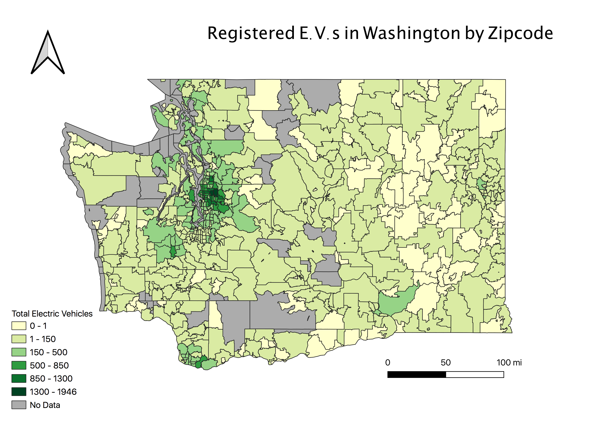

Homework 9: Make a choropleth or proportional symbol map
Hanson Powell
This map shows a choropleth of the total electric vehicles in each zip code of Washington. I wanted to choose an energy related topic for this assignment because I study energy systems here at UNC, and discovered this EV CSV when I filtered my results to this topic. I had to do some manipulation in excel in order to allow myself to do the join in QGIS. I was unable to save or export my shapefile as a geoJSON, everytime I tried it said "failure" and "Permission denied" so I linked the website where I downloaded it.

Data Used for This Project
CSV dataset
Link to CSV file
Link to Shapefile